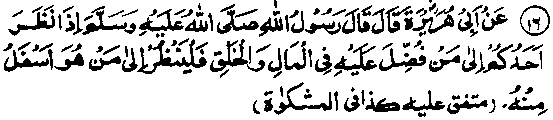

Chapter Six · Section (d): Ahadith on the foregoing subjects (concerning the excellence of Tawakkul)
Hadith 16

Rasulullah Sallallaho alaihe wasallam said, "When anyone of you looks at someone who is superior to him in wealth or in good looks, he should also look at someone who is inferior to him in these respects".
The Hadith may be explained further by an example: Suppose you come across a millionaire and feel envious of his fortune, saying regretfully to yourself,'‘This man has been granted abundant wealth, while I have but little money’! Then, at the same time, you should also think of a person who is even poorer than yourself and has often to go without food. If you do so, your regret for your poverty will be replaced by gratefulness to Allah Ta'ala for having saved you from starvation.
Another Hadith says: "Do not look at those who are superior to you in wealth, but look at those who are inferior to you; that will keep you from belittling those favours that Allah Ta'ala has bestowed upon you". (Mishkaat)
Abu Zarr Ghifari Radhiallaho anho narrates: "My dearest friend Rasulullah Sallallaho alaihe wasallam advised me to observe seven things: (1) he commanded me to love the poor and keep their company;(2)he commanded me not to look at those who are superior to me (in wealth) and advised me to look at those who are inferior to me in this respect; (3) he commanded me to join ties of relationship, even when the relatives turn away from me; (the version in Targheeb-wa-Tarheeb has: even when the relatives do me wrong); (4) he commanded me not to ask anyone for' anything; (5) he commanded me to speak the truth even if it is bitter; (6) he commanded me not to care for the reproach of anyone while I am engaged in seeking the pleasure of Allah Ta'ala; (T) he commanded me to recite this phrase frequently:
There is no might and no power except in Allah, for, he said, these words have come down from a Treasure just under Allah’s Throne (The ‘Arsh’) (Mishkaat) There are several narrations regarding the importance of reciting this Ayat frequently.
It has been narrated in another Hadith that Rasulullah Sallallaho alaihe wasallam once said, "A person who possesses two characteristics will be counted by Allah Ta'ala among those who are patient and grateful to Him: he who looks up to his superiors in religious matters and tries to follow their example; and he who looks at those who are inferior to him in worldly matters and feels grateful to Allah Ta'ala for bestowing His Bounties. Such a person will be recorded as a patient and grateful person. But he who looks at his inferiors in matters of religion (and considers that so-and-so is not half as good as I am, in performance of virtues’) and is jealous of those who are superior to him in worldly matters, grieving over what has not been granted to him, such a one will not be recorded by Allah Ta'ala as a grateful or patient person." (Mishkaat)
Aun bin Abdullah Rahmatullah alaihe says that he used to sit in company with rich people and was always grieving. The reason was that when he saw someone dressed in fine clothes, or riding an excellent horse, better than his own, he was filled with grief because he felt inferior to other people. Then he began to associate with poor people and this painful feeling of inferiority disappeared, because he saw that his own dress and riding beast, etc., were superior to theirs. (Ihya)
The Ulama advise that one should many a woman who is poorer than oneself, and not a wealthy woman. For, he who marries a prosperous woman, will have to bear many hardships, for example: (i) He will have to settle a large amount as a dower, (ii) It will take a long time before she joins her husband, because her parents will delay sending her to his house and offer many excuses, (iii) He will feel shy of asking her to serve him. (iv) She will demand large amounts of money for expenses, (v) If he wants to divorce her, he will not be able to do so, for fear of losing the fortune that she possesses. They say that a wife should preferably be inferior to her husband in four things, or else he will not command her respect age, height, wealth, lineage. And she should be superior to her husband with regard to four things: beauty, manners, piety, good habits. (Ihyaa)
Once a person came to a Sufi Sheikh and complained to him about his own poverty, saying that he was in great distress and would prefer death to such a life. The Sheikh said to him, "Are you willing to have your eyes taken out in exchange for ten thousand Dirhams." He replied, “Certainly not” The Sheikh said ‘Would you like to have your tongue plucked out and get ten thousand Dirhams in return?” The man said, "Of course not." The Sheikh said, "Would you agree to having both your hands and feet cut off in return for twenty thousand Dirhams" ‘The man said that he would not. The Sheikh asked,'‘Are you willing to be made a mad man and get ten thousand Dirhams in return?" The man said that he was not willing. At this, the Sheikh said to him, “Are you not ashamed of yourself? You admit that Allah Ta'ala has granted you so many precious gifts, the value whereof, in your own estimation, exceeds fifty thousand Dirhams (counting only a few gifts, by way of illustration) and yet you complain of poverty!"
It is said that once Ibne Sammak Rahmatullah alaihe paid a visit to a king. It so chanced that, when the Sheikh greeted him, the king was holding a tumbler of water in his hand. He said to the Sheikh, “Give me a word of advice” The Sheikh said, “Supposing this tumbler of water could be had only at the cost of your entire kingdom and you had to choose between dying of thirst and giving your kingdom away, which one would you prefer?"‘The king replied, “I would naturally prefer a tumbler of water and part with my entire kingdom’’ The Sheikh said, '‘Then, I do not understand why anyone should take joy in a kingdom which is worth only a tumbler of water’! These two incidents show that each one of us has been granted, by Allah Ta'ala, such precious gifts, the value whereof cannot be determined in terms of millions and billions.
The bounties referred to above have been bestowed upon almost everybody but, if we consider carefully, we shall see that each one of us has been granted, by Allah Ta'ala, certain special favours as an exclusive privilege. Of these, there are three things in which everybody claims to excel others. First, there is the faculty of reason; even the dullest fool considers himself to be the wisest of all men and boasts of his own superior understanding. This claim to distinction, true or false, proves that the man believes himself to be specially favoured by Allah Ta'ala. Is it not incumbent upon him to be thankful to Allah Ta'ala more than anybody else?
Secondly, everybody considers himself to be superior to others in good habits. Each one of us can pin-point, in everybody else, some habit which he considers to be undesirable. In other words, everybody believes himself to be perfect in manners and thinks that everybody else is suffering from some flaw. For, no one is willing to give up his habits, nor does anybody think any of his own habits to be questionable. Some people do occasionally acknowledge their bad habits, but it is mere affectation, not from their heart. Is it not then incumbent upon the man,who praises his own habits to be grateful to Allah Ta'ala for granting him this favour, even though he finds' someone else superior to himself in some other respect?
Thirdly everybody knows better than others about his personal affairs and about his own inner state, and no one else can claim to excel his knowledge in this respect. Besides, there are certain facts about everyone personal and inner life, which he wants to conceal from others, at all costs. So, it is a great favour of Allah Ta'ala that He has put a veil over all that is unseemly in us. Thus, Allah Ta'ala has, so to say, fulfilled the desire of everybody to keep his weak pointe concealed from others. And for this great favour also, everybody should be grateful to Allah Ta'ala. Likewise, there are thousands of gifts and privileges bestowed by Allah Ta'ala upon everybody, which he values above everything else and which he is not willing to exchange for other bounties of the same or of a different kind. Take, for example, the privilege of being a human being: nobody would like to be changed into a monkey. Similarly, few men would like to lose their masculinity and become a females; no Mo’min can think of losing his Imaan (faith) and become a non-believer; no Hafiz (one who knows the Qur’an by heart) would like to change his lot with that of a non-Hafiz; no scholar of divinity (Alim) would prefer any other status for himself; nobody who is handsome would like to be deprived of his good features; no parent would like to be made childless, and so on. In short, each one of us is enjoying certain special privileges in matters relating to manners, appearance, character, family connections, prestige, social status, etc., which he is most unwilling to exchange for any other thing. Is it, then, not correct to say that each one of us has been granted, by Allah Ta'ala, thousands of special favours which have been denied to others? And, is it not unbecoming of a person to be ungrateful to Allah Ta'ala and to look enviously at another one who is possessed of some other bounty? So if you find someone possessing abundant wealth, you should think of the numerous bounties (mentioned above). You will find that, on the whole, you are more highly favoured than the object of your envy (or jealousy). (Ihyaa)
As regards the wealth in his possession, nobody knows what is going to become of it; whether it will be a source of ease and comfort for him or cause trouble for him. For, Rasulullah Sallallaho alaihe wasallam once said, ‘Do hot feel envious of a wicked person for his possessing a bounty; for you do not know what misery he is going to encounter after his death. Allah Ta'ala has decreed for a wicked man a damnation i.e. Jahannam that knows no ending’. (Mishkaat). We shall discuss this subject, in detail, under the Hadith that follows immediately.